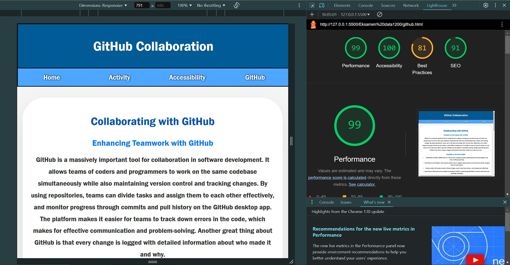

Accessibility Presentation and Testing
Automated Accessibility Testing
We tested the site using Lighthouse which is an automated tool that evaluates various aspects of accessibility, such as contrast, semantic structure, and proper use of attributes. The tool flagged the following strengths and areas for improvement:
Strengths of discovering accessibility issues through automated tests
- Alt Attributes: All images includes descriptive alt text, ensuring they are accessible to screen readers. For example, the Audi image uses the alt text: "Audi," which briefly describes the car for visually impaired users.
- Filetype on images: To begin with we used images with the jpg filetype, which we later changed to the Avif filetype after reccomendation from lighthouse. Avif can maintain high image quality while significantly reducing file sizes, leading to faster loading times and reduced bandwidth usage, especially crucial for mobile users or those on slower networks.
- Color Contrast: The site's color scheme was tested to be colorblind-friendly, with high contrast ratios between text and background that is also why we used shades of blue, as well as yellow colors to contrast when hovering over some elements such as the nav bar.
- Semantic Structure: Proper HTML5 elements, such as
<article>,<figure>, and<figcaption>were used for content organization, aiding screen readers and helping more people navigating the site.
Manual Accessibility Checks
Automated tools cannot catch everything. We conducted manual checks for the following:
- Logical Tab Order: Navigation via the keyboard was tested to ensure all interactive elements, such as links and buttons, followed a logical tab order.
- Responsive Design: Media attributes and flexible layouts were used to ensure the site adapts seamlessly across devices.
- Image Optimization: Smaller images were used to reduce bandwidth usage and improve loading speeds.
- Hover and Focus States: Interactive elements, like images, were manually checked to ensure they provide visual feedback when focused or hovered, enhancing usability for keyboard users.
- Resizing and scalingwe also implemented @media to scale images and different elements throughout our code so they stay consistent across different viewports.
Conclusion
While automated tests are a helpful starting point,
manual testing revealed things that required us to look through our code carefully.
we paid attention to accessibility from the beginning and tried to
create a site that ensures that the site is accessible for all users.
we used Semantic HTML, responsive design, optimized images,
and avoided using <div> at all.
The pictures below show the first lighthouse test results we had for our pages, excluding the accessibility page
Github
Index

And the pictures below are all our test results after optimizing with the information given by lighthouse